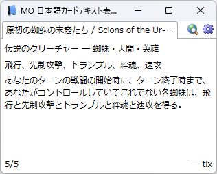

MO 日本語テキストプレビュー
Magic: The Gathering Online で表示されているカードに対応して、日本語テキストを自動で表示するアプリです。

ダウンロード
使い方
必要条件
.NET Framework 4.6（Windows 10 なら標準でインストール済みです）
手順
- MO を起動し、COLLECTION 画面や対戦・トレード中に Preview Pane を表示するようにします（最小化しても OK）。
- MO 上で調べたいカードにマウスカーソルを移動させます。
- このアプリの表示が変わり、そのカードの日本語テキストが表示されます。
補足
- Preview Pane を表示するには、ACCOUNT 画面の「Display & Sound Settings」内の右下にある「Display Card Preview Window」にチェックを入れます。 詳細はこちら。
- トークンや紋章などには対応しておらず、何も表示されません。詳細はこちら。
- あくまで参考程度のご利用でお願い致します。このアプリを原因とするプレイミスには責任を負いかねます。
その他の機能
- 右クリックメニューからカード名をコピーしたり、MTG Wiki のカード評価ページに移動したりできます。
- 右上の歯車アイコンのボタンから、このアプリで使用するフォントとそのサイズを設定できます。その他、ウィンドウサイズなどの設定は、%LocalAppData%\co3366353 フォルダに保存されます。
詳しい説明や既知の不具合については Wiki をご確認ください。
リソース
- このアプリで表示する日本語テキストは、WHISPER の検索結果をテキストファイルに保存したものに基づいています。
コメント
ゲスト投稿可能です。